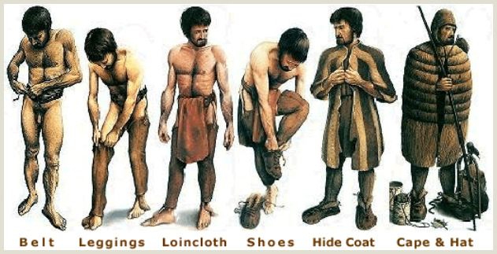
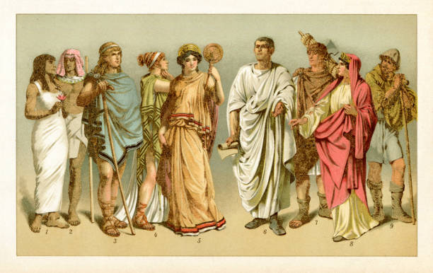
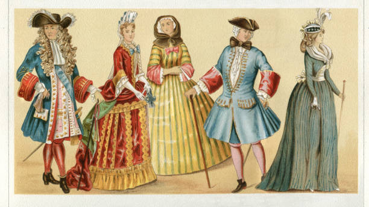
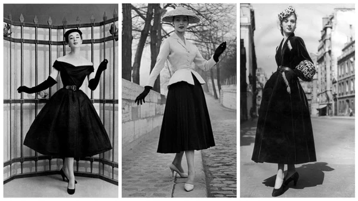
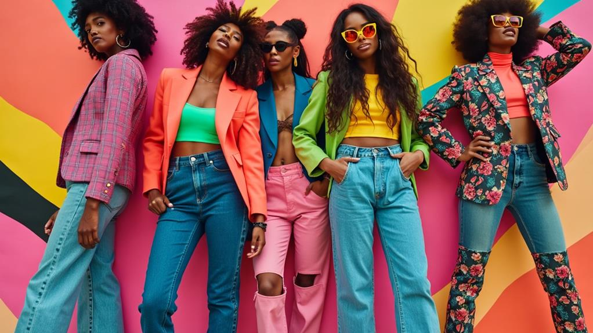
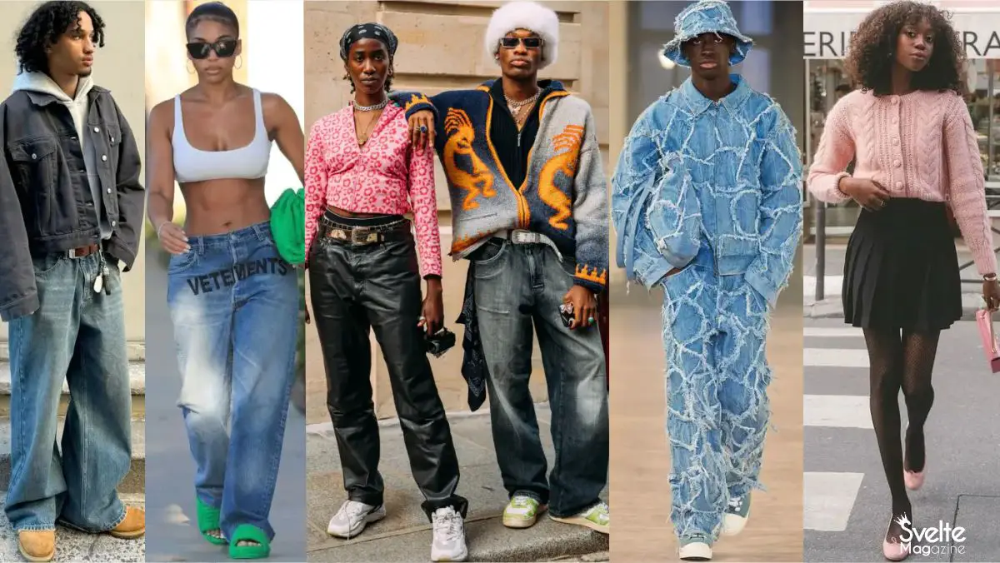
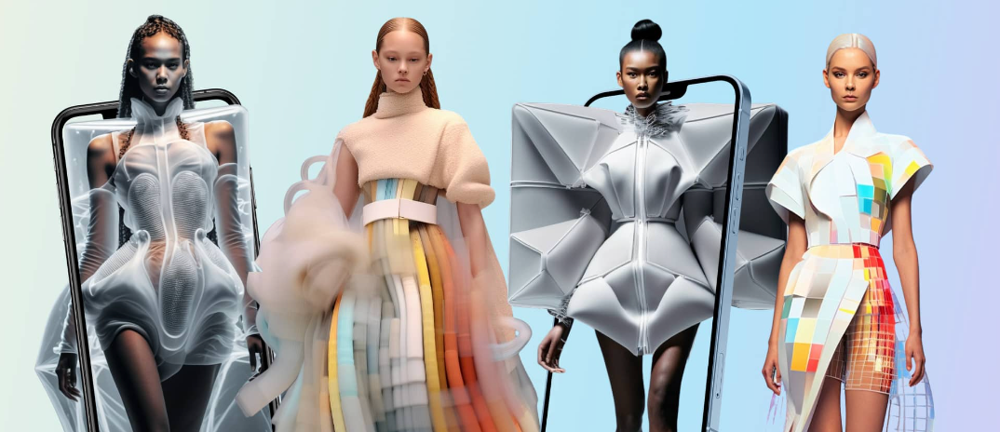

Animal skins and natural fibers offered protection from the environment. Fashion was born out of necessity.
👗 Fashion Evolution
Fashion Evolution Through the Ages
Prehistoric Era – Function Over Form

Ancient Civilizations – Identity and Status

Draped linen garments, ornate jewelry, and symbolism marked Egyptian, Greek, and Roman attire.
Renaissance – Art Meets Attire

Fashion exploded with color and detail. Garments featured rich fabrics, slashed sleeves, and intricate embroidery reflecting humanist ideals and artistic innovation.
“Clothes make the man.” — Desiderius Erasmus
1920s – Flapper Glamour
Short dresses, bob cuts, and fringe defined women’s liberation through fashion.
“Fashion is architecture: it is a matter of proportions.” — Coco Chanel
1950s – Postwar Elegance

Characterized by full skirts, cinched waists, and polished style, the 1950s revived glamour. Youth culture also introduced leather jackets and denim rebellion.
“Give a girl the right shoes, and she can conquer the world.” — Marilyn Monroe
1980s – Power Dressing & Pop

The 1980s were bold and expressive. From shoulder pads and power suits to streetwear and punk, fashion celebrated individualism and excess.
“Fashion is the armor to survive the reality of everyday life.” — Bill Cunningham
2000s – Y2K Revival & Experimental Edge

The 2000s marked a shift toward experimental style, tech-inspired aesthetics, and a resurgence of early 2000s pop culture icons. From low-rise jeans and bedazzled logos to edgy high fashion, the era was defined by contradiction: maximalist excess and minimalist techwear, luxury branding and DIY rebellion.
“It’s a new era in fashion—there are no rules.” — Alexander McQueen
2020s – Sustainable Expression & Digital Identity

Fashion in the 2020s blends sustainability, inclusivity, and digital transformation. Styles range from minimalist loungewear to maximalist streetwear, all while championing ethics, individuality, and tech integration. Virtual fashion and the rise of the metaverse are reshaping how people express identity.
“Buy less, choose well, make it last.” — Vivienne Westwood
Understanding Our Fashion Footprint
The fashion industry has a significant impact on our planet. From the resources used to make our clothes to the waste created when we dispose of them, it's essential to be aware of our "fashion footprint."
- Resource Consumption: Fashion relies heavily on water, energy, and raw materials like cotton (which requires extensive water and pesticides) and petroleum-based synthetic fibers.
- Pollution: Textile production and dyeing processes can lead to water and air pollution. Fast fashion contributes to chemical runoff and greenhouse gas emissions.
- Waste: A significant amount of clothing ends up in landfills each year. Synthetic fabrics can take decades to decompose, contributing to environmental degradation.
The Rise of Sustainable Fashion
Sustainable fashion is a movement that seeks to address these negative impacts. It involves designing, manufacturing, and using clothes in ways that minimize environmental harm and maximize positive social impact.
Key Principles of Sustainable Fashion
- Eco-friendly Materials: Using organic cotton, recycled fibers, and innovative textiles like those made from pineapple leaves or mushrooms.
- Ethical Production: Ensuring fair wages and safe working conditions for garment workers.
- Reducing Waste: Implementing zero-waste design techniques, upcycling, and recycling textiles.
- Transparency: Brands being open about their supply chains and environmental practices.
- Circular Economy: Creating a system where clothes can be reused, remade, or recycled, rather than ending up in landfills.
How You Can Be a More Sustainable Fashion Consumer
- Buy Less, Choose Well: Invest in quality pieces that will last, rather than buying into fast fashion trends.
- Support Sustainable Brands: Look for companies that prioritize ethical and environmental practices.
- Shop Secondhand: Give clothes a second life by buying from thrift stores or consignment shops.
- Care for Your Clothes: Wash them properly and mend them to extend their lifespan.
- Recycle or Donate: Don't throw clothes away! Donate them or find textile recycling programs.
By making informed choices, we can all contribute to a more sustainable and ethical fashion industry.
AI Fashion Chatbot
⏱️ Quick Fashion Quiz
What does "upcycling" in fashion primarily involve?
🎥 Fashion Evolution Video
Click to play and journey through the evolution of fashion.
Revision: Fashion Evolution
Watch trends morph from ancient robes to futuristic wearables.
Loading fashion...